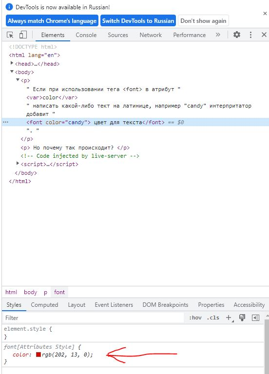
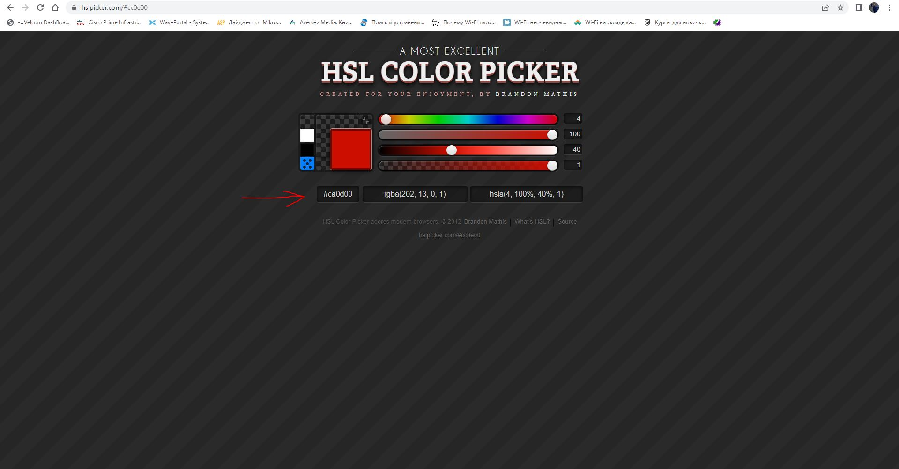

Если при использовании тега <font> в атрибут color написать какой-либо тект на латинице, например "candy" интерпритатор добавит цвет для текста.
Но почему так происходит? Для этого запустим режим отладчика и обратим внимание на формировагние цвета во вкладке Style.
И мы там увидим, что цвет выбран в режиме RGB набором цифр.

А давайте этот набор цифр введем на ресурсе https://hslpicker.com/ в графе RGBA,
и обратим внимание на изменившуюся запись в графе HEX.

Вот и разгадка. Интерпритатор воспринимает знаки из 16-ричной системы счисления, а знаки не из нее, преобразует в 0.
Поэтому и получается такой интересный цветовой код.